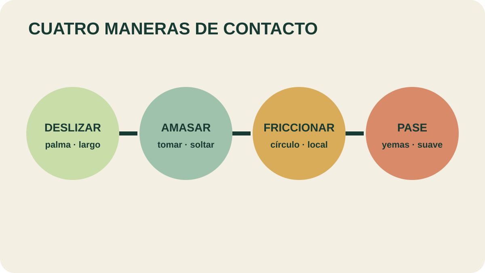

Módulo 27 · 20 minutos
El contacto: masaje con aceites esenciales
Al terminar, vas a poder distinguir maniobras básicas y reconocer los límites señalados para el contacto.
Aplicar no es amasar
El aceite diluido llega a la piel mediante movimientos largos, lentos y rítmicos. Ese deslizamiento no es la misma maniobra con la que se toma y libera un grupo muscular. Confundirlas vuelve brusco un comienzo que debería ser gradual.
La entrada: deslizamiento y roce
El alterna ambas manos sobre la piel. Es la maniobra de aplicación. Los roces, en cambio, usan las yemas de los dedos de forma suave y continuada sobre una superficie amplia.
Ambos movimientos permiten reconocer textura, respuesta y comodidad antes de avanzar. La presión no se decide por costumbre: se ajusta y se detiene si aparece una señal incómoda.
Trabajar un volumen: amasamiento
El alterna presión y liberación. El material describe variantes digitales, con nudillos, con puño y con ambos pulgares. Cada una cambia la superficie de contacto y la precisión.
La variante digital dibuja pequeños círculos con las yemas. “Centrífugo” significa alejarse de un centro; “centrípeto”, dirigirse hacia él. Las maniobras con nudillos o puño se reservan a zonas concretas y no justifican profundidad excesiva.
Fricción, pinzamiento y percusión
La busca zonas profundas mediante un gesto circular o vibratorio. El pinzamiento forma una pinza amplia entre dedos y pulgar para elevar tejido. Las manos ahuecadas y la percusión introducen contactos rítmicos.
Los pases deslizan las yemas suavemente siguiendo direcciones nerviosas. La torsión mueve ambas manos en giros contrarios; los golpeteos usan el canto de la mano. El repertorio es amplio, pero no convierte una práctica breve en tratamiento de lesiones.

Leé la dirección de las manos
Localizá cuál maniobra usa la palma completa, cuál toma tejido y cuál dibuja círculos con los dedos. ¿Con cuál empezarías para distribuir una preparación diluida?
El límite forma parte de la técnica
Las maniobras bruscas pueden lesionar vasos sanguíneos y tejidos subcutáneos. El material indica que la flebitis no debe masajearse. Sobre varices no se trabaja la zona inferior; solo se describen movimientos ascendentes ligeros y sin presión.
Este módulo tiene finalidad de reconocimiento y secuenciación, no habilita a tratar condiciones clínicas. Ante dolor, diagnóstico, lesión o duda, no se improvisa una maniobra.
Actividad · Cinco minutos sobre papel
Diseñá una secuencia teórica de cinco minutos para aplicar un aceite correctamente diluido: maniobra, zona, duración y presión. Empezá con deslizamiento y agregá como máximo dos maniobras. Incluí una condición clara de detención.
La última lista decide si la fórmula puede usarse
Una mezcla puede estar bien compuesta y correctamente diluida, pero ser inadecuada para una persona o una situación. Antes de ofrecerla, hay que revisar contraindicaciones.
Guardá esta estación
Cuando puedas explicar la idea central con tus propias palabras, marcá el módulo como completado.